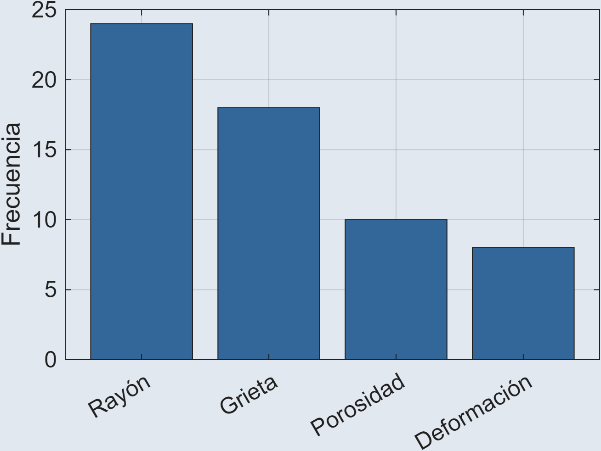
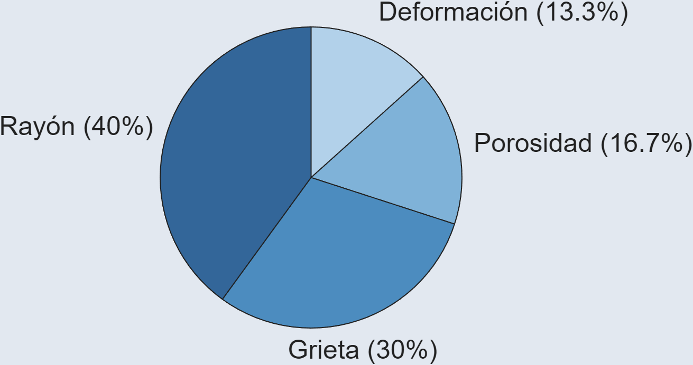
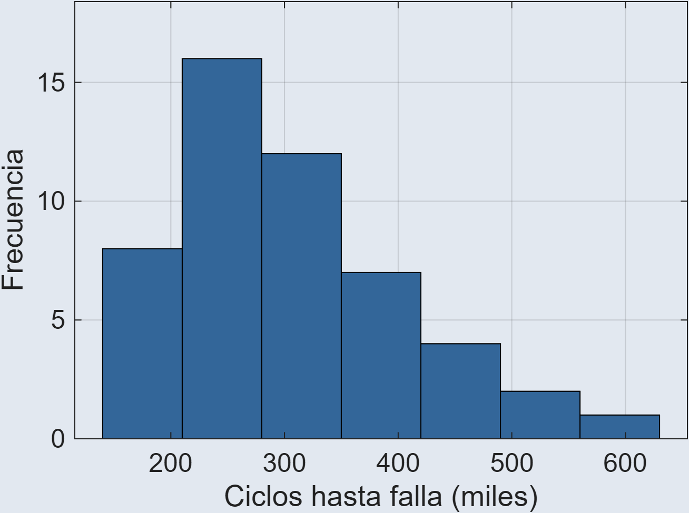
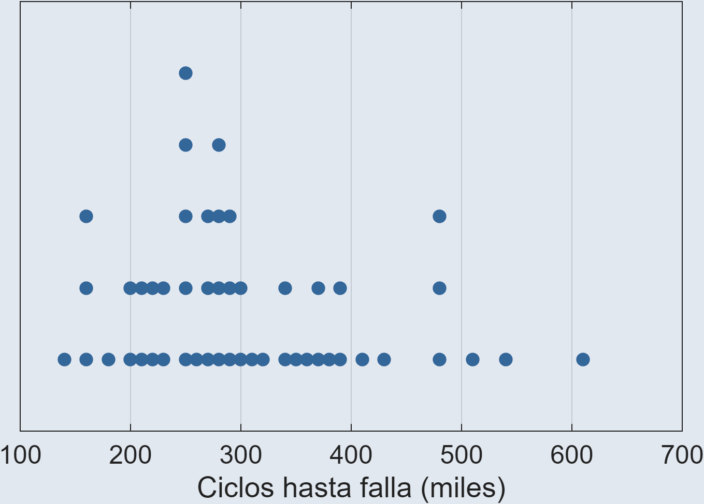
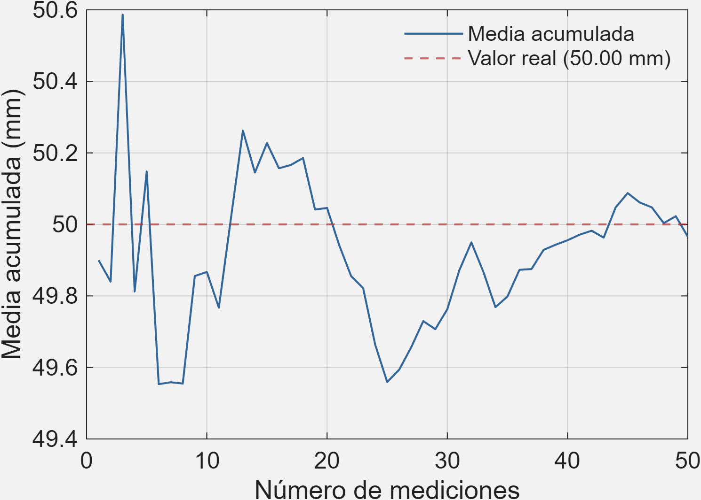

Definiciones. Manejo de Datos y Medidas Estadísticas
1. Introducción y conceptos fundamentales
2. Recolección, organización y representación gráfica de datos
3. Medidas de tendencia central y posición
4. Medidas de dispersión y de forma
Foto por Jean-Louis Aubert en Unsplash
Génesis de los datos | Observación vs. Experimento
Método de captura | Instrumentos directos vs. indirectos
Estrategia de selección | Muestreo probabilístico vs. no probabilístico
Estudio donde se registra, mide y analiza variables tal como suceden en su entorno natural, sin intervenir ni alterar las condiciones ni a los sujetos.
Estudio donde se manipula deliberadamente una o más variables independientes bajo condiciones controladas para medir su efecto causal sobre una variable dependiente.
| Criterio | Experimental | Observacional |
|---|---|---|
| Control | Manipulación directa | Registro sin intervención |
| Objetivo | Causa y efecto | Patrones y asociaciones |
| Sesgo típico | Validez externa reducida | Variables de confusión |
| Validez | Interna | Ecológica / externa |
Antes de recolectar datos, hay que decidir cómo capturarlos: con qué herramienta se van a medir y qué tan bien esa herramienta refleja lo que se quiere conocer.
Método estructurado de recolección de datos primarios que recopila información cualitativa o cuantitativa sobre opiniones, características o comportamientos de una población mediante la formulación de preguntas.
La encuesta no es el único instrumento para estudios observacionales, entre otros encontramos:
| Instrumento | Función |
|---|---|
| Diario de campo | Notas y reflexiones detalladas del observador |
| Guía de observación | Pauta con aspectos clave a registrar |
| Lista de cotejo | Marca presencia/ausencia de un evento |
| Escala de apreciación | Mide intensidad o frecuencia de una conducta |
Herramientas físicas (sensores, calibradores) o conceptuales (cuestionarios, escalas, listas de chequeo) diseñadas para registrar datos operativos de forma válida y confiable.
| Criterio | Encuestas | Instrumentos |
|---|---|---|
| Control | Depende del sujeto | Estandarizado |
| Objetivo | Percepciones y conductas | Magnitudes físicas |
| Sesgo típico | Deseabilidad social | Error de calibración |
| Validez | Comprensión del ítem | Precisión y repetibilidad |
Foto por Ilya klimkin en Unsplash
Proceso de seleccionar un subconjunto de una población para recolectar datos, con el fin de generalizar los resultados sin tener que medir a todos los elementos.
Técnica de selección de muestra donde todos los elementos de la población tienen una probabilidad conocida y diferente de cero de ser seleccionados, lo que permite extrapolar resultados e inferir estadísticamente.
Técnica de selección basada en el criterio, accesibilidad o conveniencia del estudio, donde se desconoce la probabilidad de inclusión de cada sujeto, impidiendo la inferencia estadística cuantitativa hacia la población.
| Criterio | Probabilístico | No probabilístico |
|---|---|---|
| Control | Riguroso, aleatorio | Por conveniencia |
| Objetivo | Representatividad | Explorar casos de difícil acceso |
| Sesgo típico | Error de cobertura | Sesgo de selección |
| Validez | Margen de error calculable | Sin inferencia poblacional |
Para evaluar el diámetro de 500 ejes producidos en un turno, se numeran todos del 1 al 500, y mediante un generador de números aleatorios se seleccionan 40 para su medición.
Con el fin de evaluar la satisfacción de clientes en un centro comercial, se encuesta a las primeras 50 personas dispuestas a responder, ubicadas en la entrada principal durante la mañana.
Tras dividir una planta en 5 zonas según tipo de maquinaria, se seleccionan aleatoriamente 3 de los 10 equipos disponibles en cada zona para instalar sensores de vibración.
Foto por Nick Brunner en Unsplash
Antes de graficar, hay que organizar los datos: contar cuántas veces se repite cada valor o rango, para pasar de una lista de números a información interpretable.
Herramienta que organiza un conjunto de datos mostrando cuántas veces se repite cada valor o rango de valores, facilitando su lectura e interpretación.
| Criterio | No agrupados | Agrupados |
|---|---|---|
| Cuándo usar | Pocos valores distintos | Muchos valores o datos continuos |
| Unidad de análisis | Valor individual | Intervalo de clase |
| Detalle | Sin pérdida de información | Se pierde el dato exacto |
| Lectura | Más extensa | Más resumida y clara |
Antes de construir una tabla de datos agrupados, hay que decidir cuántas clases usar y qué tan ancha debe ser cada una.
\[\text{ancho} = \frac{\text{valor}_{max} - \text{valor}_{min}}{k}\]
Al registrar la cantidad de ciclos hasta la falla (en miles) de 50 rodamientos sometidos a una prueba de fatiga, con un mínimo de 141 mil ciclos y un máximo de 605 mil, se pide construir una tabla de frecuencias agrupando estos datos en clases.
Al clasificar 60 piezas defectuosas según el tipo de falla detectada en la línea de producción, se pide construir una tabla de frecuencias y un diagrama de barras.
Foto por Deng Xiang en Unsplash
Una tabla resume los datos en números; un gráfico permite verlos, revelando patrones que las cifras por sí solas no muestran con la misma claridad.
Representan categorías, proporciones o atributos dicotómicos mediante conteos o porcentajes por grupo.


Muestran la forma, el centro, la dispersión o la densidad de un conjunto de datos numéricos.


Foto por Google DeepMind on Unsplash
El sesgo es una distorsión sistemática que persiste sin importar el tamaño de la muestra; el error aleatorio, en cambio, tiende a compensarse al aumentarlo.
Distorsión sistemática que aleja los resultados de un estudio del valor real, favoreciendo consistentemente una dirección sobre otra.
Una planta evalúa la resistencia de un nuevo aditivo para concreto. Se fabricaron 20 probetas, curadas bajo condiciones normales. Al momento del ensayo de compresión, el laboratorio reporta los siguientes resultados. ¿La conclusión de que el aditivo cumple el estándar (≥30 MPa) es confiable?
Probetas fabricadas: 20 | Probetas ensayadas: 12
Un fabricante de sensores de presión evalúa la precisión de un nuevo modelo, más costoso que el anterior. Un técnico especializado recibe 6 pares de sensores etiquetados como “modelo nuevo” y “modelo anterior” y realiza las mediciones de calibración. ¿La comparación de precisión entre ambos modelos es confiable?
Error de medición (menor = más preciso) | Media nuevo: 0.050 Media antiguo: 0.074
El supervisor de una planta encuesta presencialmente a 12 de sus operarios sobre su cumplimiento del protocolo de seguridad, en una escala de 1 a 10. Las calificaciones obtenidas se resumen a continuación. ¿Los resultados reflejan el cumplimiento real?
Autorreporte de cumplimiento (1 = nunca, 10 = siempre) | Media: 8.8
Diferencia entre un valor observado y el valor verdadero, que puede deberse al azar o a una causa sistemática identificable.
Un técnico mide el diámetro de una misma pieza patrón (valor real conocido: 50.00 mm) usando un calibrador, repitiendo la medición varias veces. ¿Qué ocurre con el error al aumentar el número de mediciones?
Media: 50.15 mm | Error respecto al valor real: 0.15 mm
Media: 49.97 mm | Error respecto al valor real: −0.03 mm
